| 日付 | 2023年5月4日（木） |
|---|---|
| 山域 | 西上州 |
| メンバー | 家族（妻、長男・9歳） |
| 山行形態 | 子連れ日帰り |
| アクセス | 車 |
| ルート (Map) | サンスポーツランド (9:54) - (10:48) 登山口 - (11:30) 物語山 - (11:59) 西峰 (13:00) - (13:25) 登山口 - (14:03) サンスポーツランド |
今年のGWは全くどこにも出かけられない結果になってしまった。
元々は5/4～5/7で新潟旅行に行く予定を立てていたが、天候不順のため断念。
せめて天気がマシな5/4～5/5でどこかに行けないか検討したが、
宿もキャンプ場も一杯で直前で予約が取れる状況ではなかった。
仕方なく日帰り登山を実施しようと、西上州の碧岩を目指したが、
当日、息子の機嫌が悪く、妻も行きたがらずで、高速ICを下りる直前で
強制的に行先を変更させられる羽目になる。
結局、碧岩から比較的近場にある物語山に行くことにする。
もはや何のために活動しているかもよく分からない状態だが、
どこにも行かないよりはマシだろうと思い、物語山に向かう。
サンスポーツランドの駐車場に車を停める。標高410m。
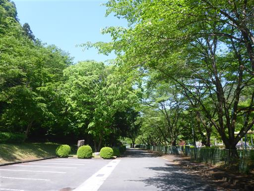
最初の1時間はつまらない林道歩き。
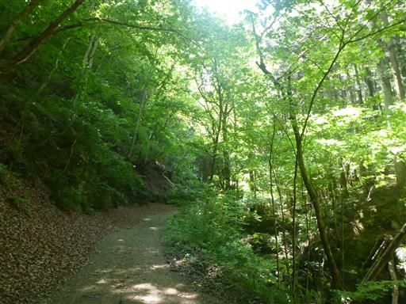
ようやく登山口に到着する。
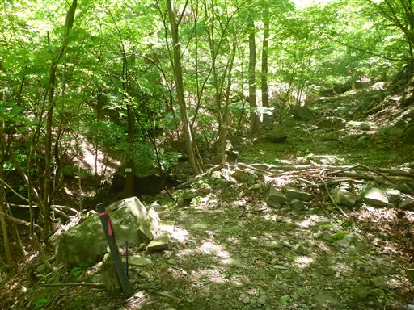
西上州らしい急斜面の登山道。
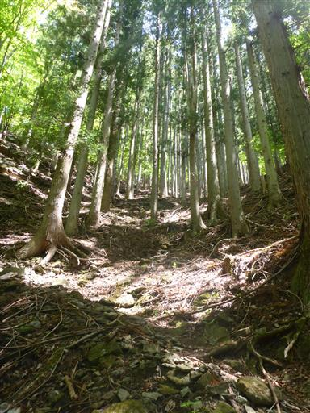
山頂近くは薄く割れた石が散在している。
歩くとカチャカチャと乾いた音が鳴る。

物語山と西峰の鞍部に到着。
西峰の方が展望が良いらしいので、先に物語山に向かう。
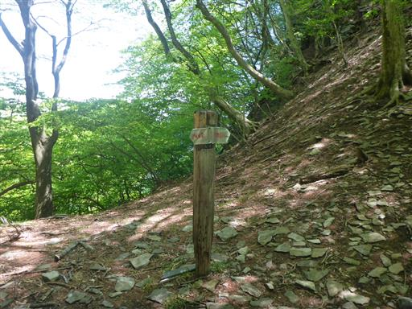
岩がちな登山道を登る。
地面に転がっていた石は、これらが割れて落下したものだろう。
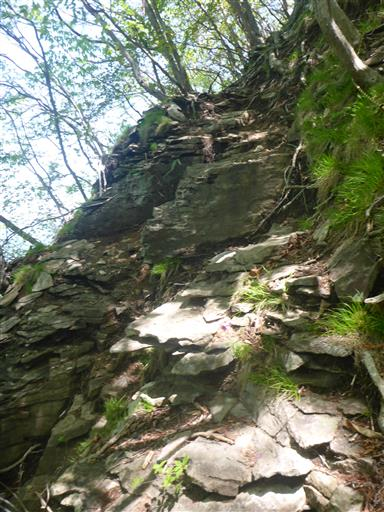
登山道の周囲にミツバツツジが見られる。
残念ながら大好きなアカヤシオは見当たらない。

山頂近くは美しい黄緑色に覆われている。
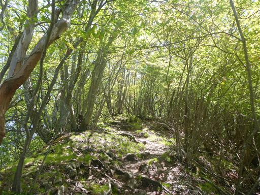
物語山山頂到着。標高1019m。
展望は全くない山頂だ。
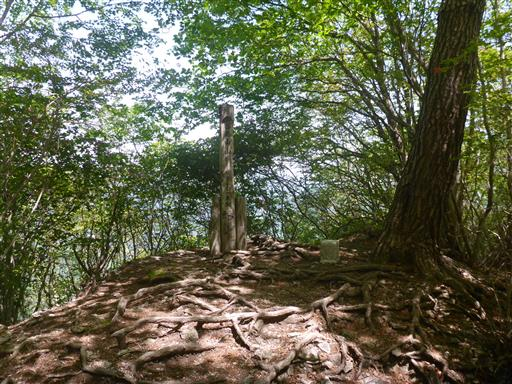
早々に山頂を脱し、直前で分かれたもう一方の道を辿ってみる。
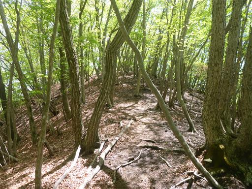
途中で栗を発見。イガの中から栗を取り出す。
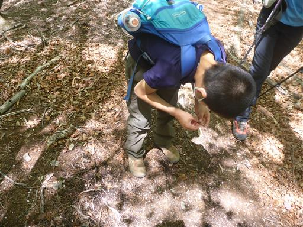
辿り着いた小ピークには南峰の標識がある。
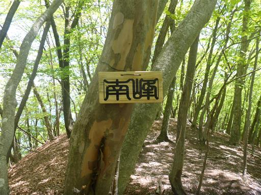
周囲は密度の濃い樹林帯だ。
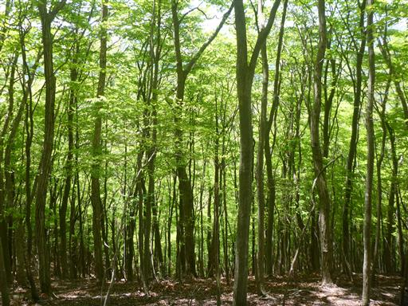
元来た道を戻ったら、今度は鞍部から西峰に登る。
分岐点から歩いてすぐに西峰に到着する。
山頂の真ん中にヤマツツジが咲いている。
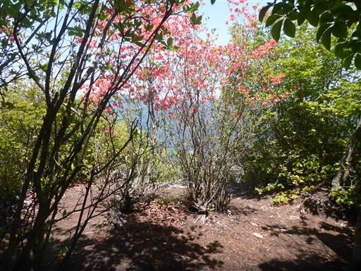
こちらにも物語山の山頂標識が存在する。
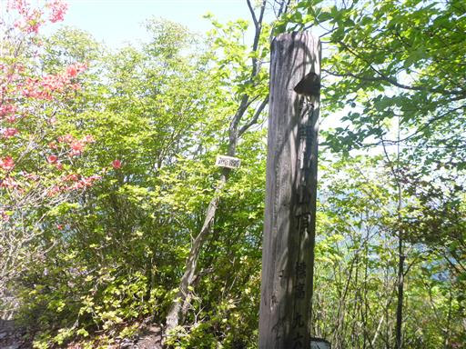
西峰からはいくらか展望が広がる。正面に見えるのは浅間山。
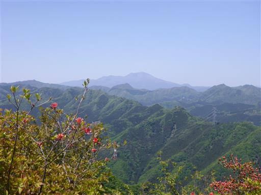
こちらは妙義山方面。
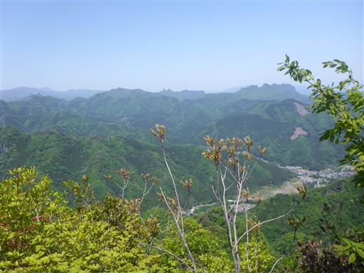
荒船山は艫岩が辛うじて見える。
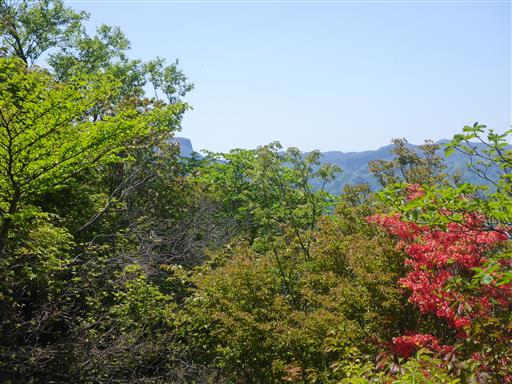
息子がおにぎりのご飯粒を落としてしまう。
早速アリがやって来て、ご飯粒を巣の中に運んでいる。

昼食を取ったら山頂出発。西峰からは先ほど登った本峰が見える。新緑がきれいだ。
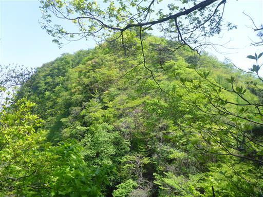
さっと下山したら、あとは林道を歩くのみ。
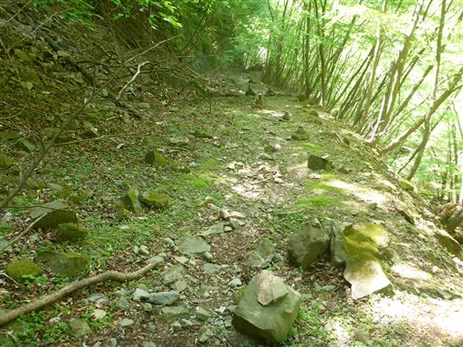
林道の側の川は滑滝がずっと続いている。
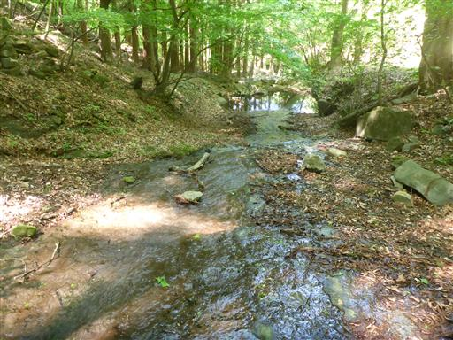
下山。
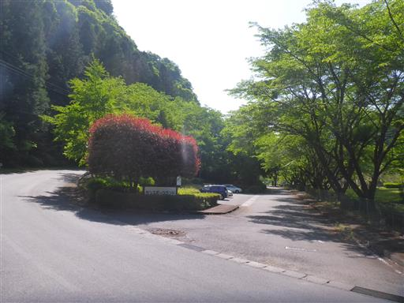
近くの公園で少し遊ぶ。
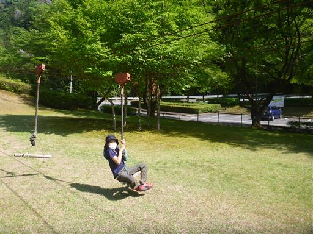
小さな藤棚。周囲には野生の藤も多くみられる。
今回は目指していた碧岩に登れず、非常に残念な山行になってしまった。
西上州の高岩と碧岩は、2011年から13年間登れずにいる。
今後10年でこの二峰に登れる機会は訪れるだろうか？
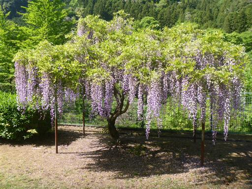